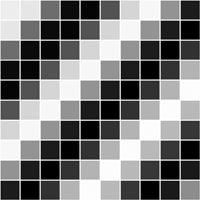

Portions of this work are from the book, Learning Processing, by Daniel Shiffman, published by Morgan Kaufmann Publishers, Copyright 2008 Elsevier Inc. All rights reserved.
This tutorial is for Processing version 1.0+. If you see any errors or have comments, please let us know.
An array keeps track of multiple pieces of information in linear order, a one-dimensional list. However, the data associated with certain systems (a digital image, a board game, etc.) lives in two dimensions. To visualize this data, we need a multi-dimensional data structure, that is, a multi-dimensional array.A two-dimensional array is really nothing more than an array of arrays (a three-dimensional array is an array of arrays of arrays). Think of your dinner. You could have a one-dimensional list of everything you eat:
(lettuce, tomatoes, salad dressing, steak, mashed potatoes, string beans, cake, ice cream, coffee)
Or you could have a two-dimensional list of three courses, each containing three things you eat:
(lettuce, tomatoes, salad dressing) and (steak, mashed potatoes, string beans) and (cake, ice cream, coffee)
In the case of an array, our old-fashioned one-dimensional array looks like this:
int[] myArray = {0,1,2,3};
And a two-dimensional array looks like this:
int[][] myArray = { {0,1,2,3}, {3,2,1,0}, {3,5,6,1}, {3,8,3,4} };
For our purposes, it is better to think of the two-dimensional array as a matrix. A matrix can be thought of as a grid of numbers, arranged in rows and columns, kind of like a bingo board. We might write the two-dimensional array out as follows to illustrate this point:
int[][] myArray = { {0, 1, 2, 3},
{3, 2, 1, 0},
{3, 5, 6, 1},
{3, 8, 3, 4} };
We can use this type of data structure to encode information about an image. For example, the following grayscale image could be represented by the following array:

int[][] myArray = { {236, 189, 189, 0},
{236, 80, 189, 189},
{236, 0, 189, 80},
{236, 189, 189, 80} };
To walk through every element of a one-dimensional array, we use a for loop, that is:
int[] myArray = new int[10];
for (int i = 0; i < myArray.length; i++) {
myArray[i] = 0;
}
For a two-dimensional array, in order to reference every element, we must use two nested loops. This gives us a counter variable for every column and every row in the matrix.
int cols = 10;
int rows = 10;
int[][] myArray = new int[cols][rows];
// Two nested loops allow us to visit every spot in a 2D array.
// For every column I, visit every row J.
for (int i = 0; i < cols; i++) {
for (int j = 0; j < rows; j++) {
myArray[i][j] = 0;
}
}
For example, we might write a program using a two-dimensional array to draw a grayscale image.

// Example: 2D Array
size(200,200);
int cols = width;
int rows = height;
// Declare 2D array
int[][] myArray = new int[cols][rows];
// Initialize 2D array values
for (int i = 0; i < cols; i++) {
for (int j = 0; j < rows; j++) {
myArray[i][j] = int(random(255));
}
}
// Draw points
for (int i = 0; i < cols; i++) {
for (int j = 0; j < rows; j++) {
stroke(myArray[i][j]);
point(i,j);
}
}
A two-dimensional array can also be used to store objects, which is especially convenient for programming sketches that involve some sort of "grid" or "board." The following example displays a grid of Cell objects stored in a two-dimensional array. Each cell is a rectangle whose brightness oscillates from 0-255 with a sine function.

Example: 2D Array of Objects // 2D Array of objects Cell[][] grid; // Number of columns and rows in the grid int cols = 10; int rows = 10; void setup() { size(200,200); grid = new Cell[cols][rows]; for (int i = 0; i < cols; i++) { for (int j = 0; j < rows; j++) { // Initialize each object grid[i][j] = new Cell(i*20,j*20,20,20,i+j); } } } void draw() { background(0); // The counter variables i and j are also the column and row numbers and // are used as arguments to the constructor for each object in the grid. for (int i = 0; i < cols; i++) { for (int j = 0; j < rows; j++) { // Oscillate and display each object grid[i][j].oscillate(); grid[i][j].display(); } } } // A Cell object class Cell { // A cell object knows about its location in the grid as well as its size with the variables x,y,w,h. float x,y; // x,y location float w,h; // width and height float angle; // angle for oscillating brightness // Cell Constructor Cell(float tempX, float tempY, float tempW, float tempH, float tempAngle) { x = tempX; y = tempY; w = tempW; h = tempH; angle = tempAngle; } // Oscillation means increase angle void oscillate() { angle += 0.02; } void display() { stroke(255); // Color calculated using sine wave fill(127+127*sin(angle)); rect(x,y,w,h); } }